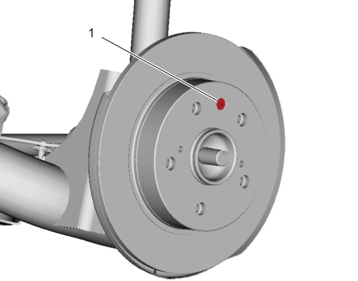
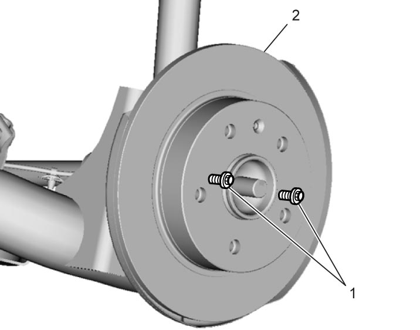
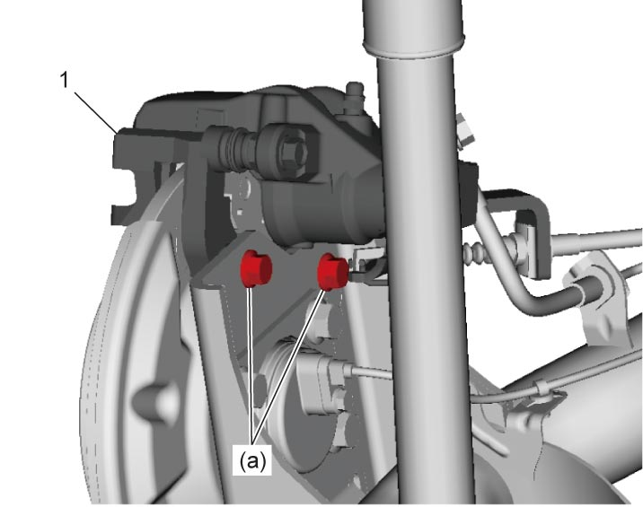

4C
| Rear Brake Disc Removal and Installation |
NOTICE:
Failure to take proper precautions during rear brake caliper removal may cause damage to the rear brake flexible hose and/or the brake piston.
•Hang removed rear brake caliper with a wire hook or the like not to twist the rear brake flexible hose during rear brake caliper removal.
•Avoid depressing the brake pedal during the brake disc removal procedure to prevent the brake piston from being forced out of the cylinder.
•Avoid depressing the brake pedal during the brake disc removal procedure to prevent the brake piston from being forced out of the cylinder.
Removal
1)Hoist vehicle and remove rear wheel. 
2)Remove rear brake caliper carrier bolts (1) and remove rear brake caliper assembly (2) from rear axle.

 "Expand image")
3)Remove rear brake disc securing screw (1), if equipped.

 "Expand image")
4)Push out rear brake disc (2) by tightening two M8 bolts (1) evenly into jack bolt holes.

 "Expand image")
Installation
NOTICE:
If the rear brake flexible hose is twisted, the hose will be damaged.
If the hose is twisted, reinstall rear brake caliper being careful not to let rear brake flexible hose get twisted.
1)Install rear brake disc to rear wheel hub and tighten rear brake disc securing screw, if equipped.
 "Expand image")
2)Install rear brake caliper assembly (1) to rear axle by tightening brake caliper carrier bolts to specified torque.

 "Expand image")
3)Depress brake pedal three times or more with engine running to activate pad clearance adjustment mechanism so that clearance between rear brake disc and rear brake pads will become appropriate.
4)Check that brakes are not dragging and that appropriate braking force can be obtained.
5)Install rear wheel and check that parking brake lever stroke is appropriate and parking brake produces proper braking force.